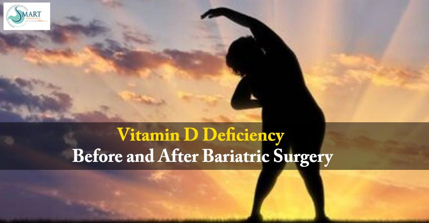

Vitamin D Deficiency Before and After Bariatric Surgery
Bariatric Surgery November 17, 2021 Dr. Atul Peters

Understanding Vitamin D Deficiency and Bone Health After Bariatric Surgery
Vitamin D is a fat-soluble vitamin. It enhances calcium absorption, though its own absorption takes place in the second and third parts of the small intestine. Reference ranges for vitamin D concentration in blood are, <20 nmol/L is deficient, 20 – 29 nmol/L is insufficient, 30 – 100 nmol/L is sufficient, and >100 nmol/L is potential toxicity.
It is important to note that hypovitaminosis D exists in a large proportion of subjects before undergoing bariatric surgery, most likely due to less intake of vitamin D-rich and fortified foods, insufficient sun exposure, seasonal and cultural variation, lifestyle, and high BMI.
Vitamin D is essential to maintain normal calcium levels by assisting in absorption. Individuals who are obese have greater fat mass, so extra vitamin D is required to maintain normal levels, due to the fact that vitamin D is isolated in adipose cells. Vitamin D deficiency is more common in dark people. Melanin concentrations in the skin present as a risk element for vitamin D deficiency, with higher concentrations providing a bigger risk due to the fact that melanin prevents vitamin D production. Research suggests that a BMI increases the rate of vitamin D deficiencies also increases.
Understanding Bone Health and Vitamin D Deficiency Post-Bariatric Surgery
There is proof recommending that bariatric surgery procedures can cause a adverse impact on bone mineral density, speeds up bone loss, and increase bone fragility. Though, these negative effects can generally be reversed with adequate supplementation post-surgery. Serum calcium levels often remain within normal range in post-bariatric surgery patients, due to the regulatory pathways in the body. Unfortunately, obese people classically have abnormal vitamin D levels due to confiscation of vitamin D within fat cells, as well as due to a sedentary lifestyle with limited sunlight exposure. It's assumed that changes in gut hormones after bariatric surgery can cause vitamin D deficiency in post-operative patients.
High PTH (Para-Thyroid Hormone) levels indicate low vitamin D and calcium levels. Patients who achieve normal vitamin D and calcium intake through diet and supplementation show low parathyroid hormone levels.
Including fortified cereals, fortified dairy products, fish and egg yolks is important to get vitamin D through diet. Also, sensible sun exposure between 10 am to 3 pm in minimal clothing is good to produce vitamin D in the skin. At least 3000 IU of vitamin D per day is important for repletion.
If you are looking for a consultation on bariatric surgery, then consult us, as we at Smart Cliniqs have the best bariatric surgeon in Delhi for you.
Be aware, be healthy!!
Back to Blog